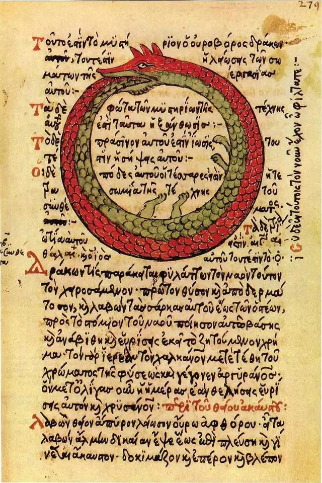
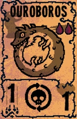
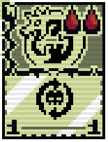
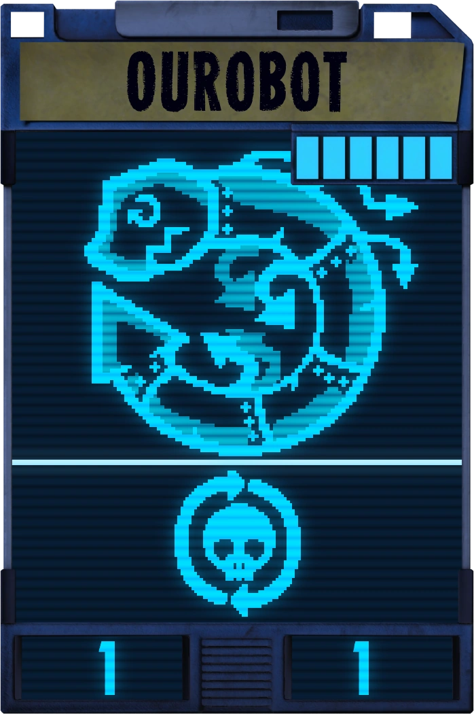

(ВНИМАНИЕ ТУТ ВОЗМОЖНО СПОЙЛЕР)
Уроборос - это символ, на котором изображена рептилия,кусающая себя за хвост.
Значение этого символа - это репрезентация вечности и бесконечности.
больше об этом символе можно узнать здесь
(ВНИМАНИЕ ВОЗМОЖНО СПОЙЛЕР)
Уроборос - это редкая карта в игре Inscryption ,которая стоит две крови и имеет символ Неуязвимость
Главная особенность этой карты это то, что у неё параметры(жизнь и урон) увеличиваются на 1 при каждой её смерти и дело в том что она сохранит параметры на ВСЮ ИГРУ(то есть когда вы в первом акте набрали на не например 3 жизни и 3 урона, то во втором акте у неё будут эти же параметры и продолжит их изменять) - это и делает карту такой хорошей.
(карты Уроброса в разных актах)
  больше об этой карте можно узнать здесь
Про Фердинанда альпиниста